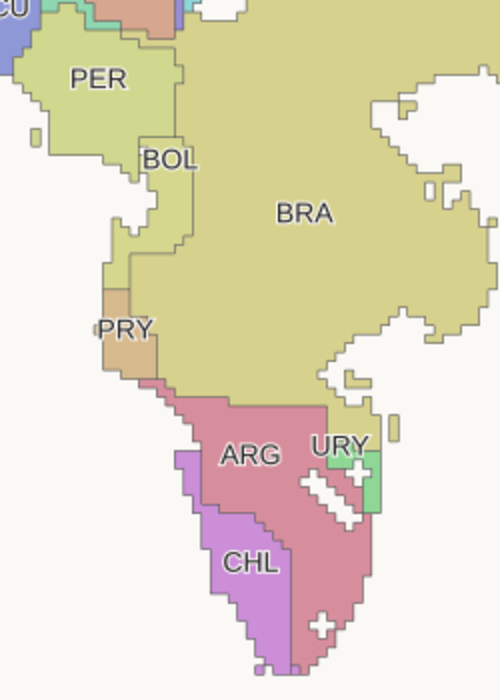
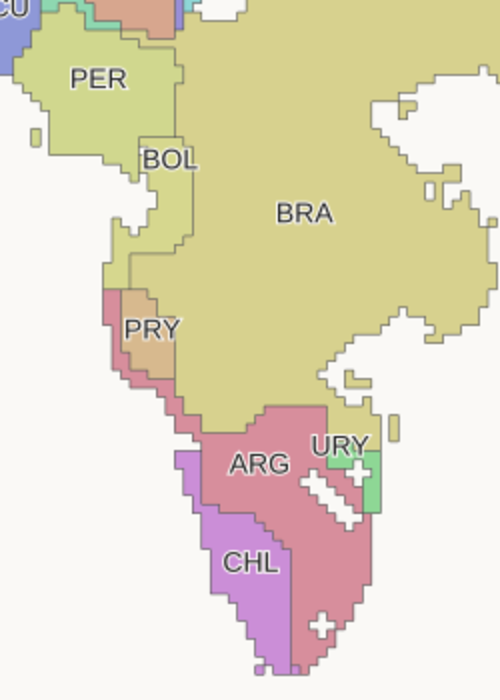
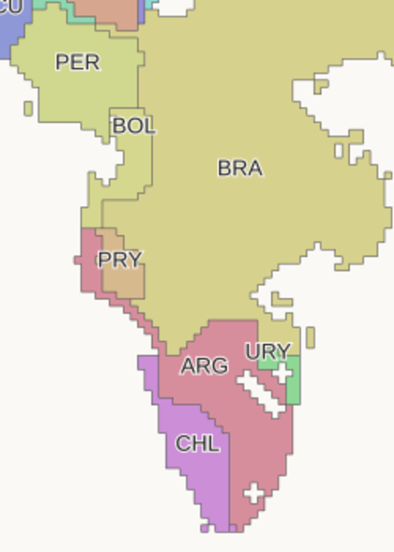
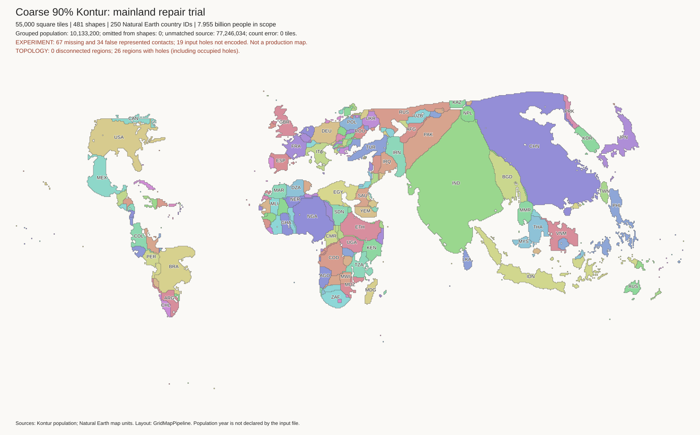
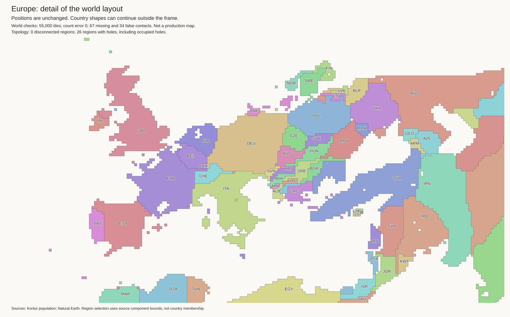
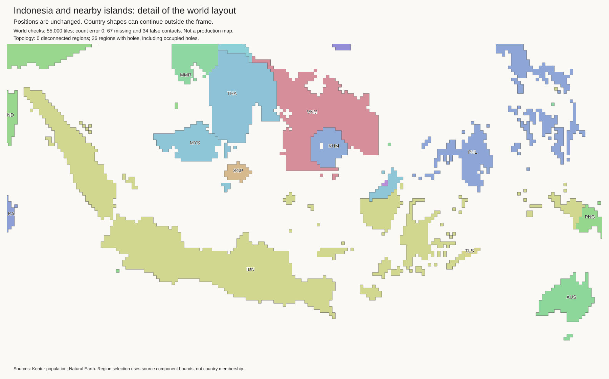
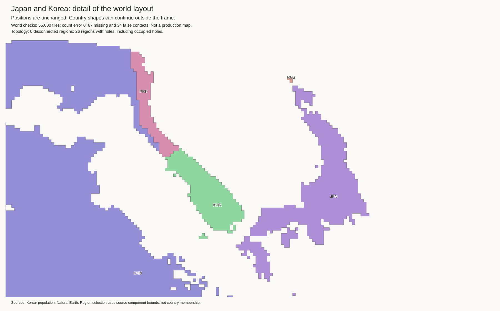
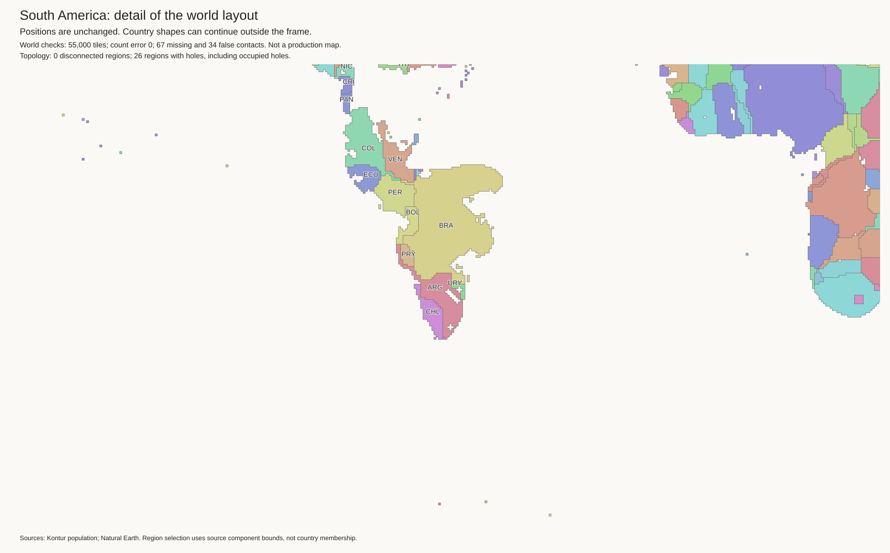
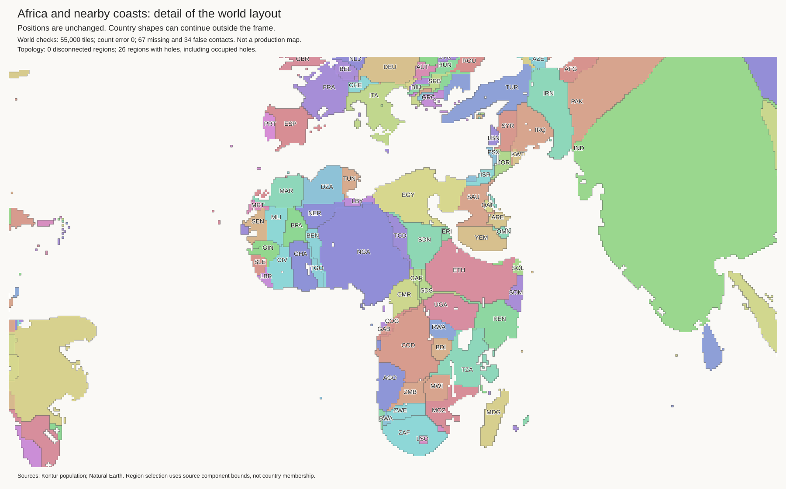
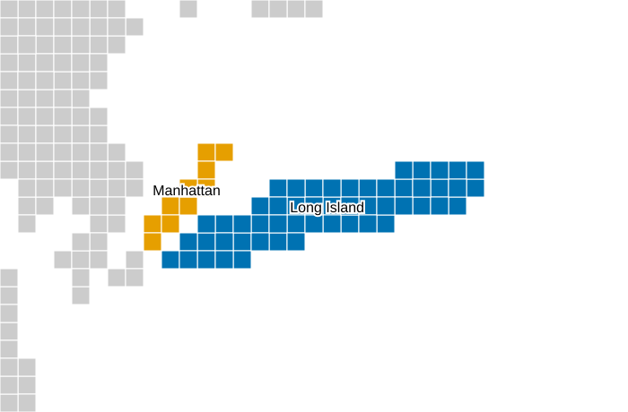

Research candidate. The current best and H3-MON data are unchanged. No strategic cuts.
All 55,000 tiles retain exact component budgets. All 481 components are connected. The 45 lakes use 220 empty cells. Lake shore checks pass.
| Check | Current best | Candidate |
|---|---|---|
| Finland touches Norway | True | True |
| Malaysia touches Thailand | False | True |
| Sweden touches Germany | True | False |
| Lithuania exterior-water edges | 0 | 2 |
| Paraguay exterior-water edges | 16 | 0 |
There are 67 missing and 34 false contacts. The current best has 73 and 48. The candidate gains 6 true contacts and loses 0. It removes 14 false contacts and adds 0. These totals do not prove correct geography.
Open issues include country shapes, remaining coast defects, and missing mainland connections. A coast can be mathematically valid but visually poor. Do not use this as a production map.
Checks and exact contact changes · Land tiles · Empty lake cells · Geographic audit
The reference for this repair is the latest Nordic and lake trial. Paraguay's sea edges fall from 16 to zero. Its Brazil, Bolivia, and Argentina borders remain. Argentina–Bolivia is restored.


A two-country swap left disconnected coastal cover. The new rule exchanges tiles between three components. Paraguay moves into Brazil. Argentina takes the vacated coastal strip. Argentina then gives an equal number of its original boundary cells to Brazil. A retained Paraguay cell keeps its Bolivia border. There is no country-specific branch in the rule.
The initial exchange changes 87 labels and keeps the whole land footprint fixed. Subsequent local fits smooth the shapes and can move the coast. They keep the budgets and true borders fixed. A thin-cell cost discourages cells that belong to no complete 2-by-2 block of their component. This is a shape heuristic, not a geographic proof.
The first exchange fixes the coast but gives Argentina a thin extension. Its thin-cell count rises from 13 to 26. The final refinement returns that count to 13.

Exchange attempts and selected moves · First refinement · Larger window · Thin-cell refinement
Checks for every retained stage.
A stronger smoothing trial increased another inland coast and was rejected. A later fit filled one unrelated enclosed-water cell. Its source status was uncertain. A fully water-pinned fit then reached its time limit without a feasible incumbent. The final result restores that cell with a single-country vacancy exchange. Only the two endpoints change: one cell becomes water again and one coast cell becomes land. The route does not add a connector. All reference water shores pass their checks.
Rejected coast regression · Water-pinned time limit · Water restoration.
Argentina still has a narrow northern extension. Its perimeter rises from 158 to 192 tile edges relative to the reference. Coastal cover is checked by component, not by the geographic direction of its coast. This needs visual review. The final smoothing fits returned valid solutions at their time limits; they did not prove optimality.
This is a checked research candidate, not a production map. The current best and H3-MON exports are unchanged.






